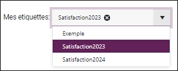
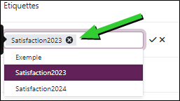

Étiqueter une étude
L’étiquetage d'étude vous permet de mieux organiser votre liste d'études. Il est possible d'ajouter des étiquettes, filtrer sur ces étiquettes et les supprimer si besoin.
Ajouter une étiquette à une étude
Pour ajouter une étiquette en mode Carte :
-
Affichez la liste des études en mode Carte.
-
Survolez la carte sous le nom de l'étude.
-
Cliquez sur"+ Etiquettes".
-
Donnez un nom à la nouvelle étiquette puis cliquez dessus pour l'ajouter ou sélectionner une/plusieurs étiquette(s) déjà existante(s) depuis le menu déroulant.


Pour ajouter une étiquette en mode Tableau :
-
Affichez la liste des études en mode Tableau.
-
Survolez la colonne "Etiquettes" de l'étude concernée.
-
Cliquez sur "+ Etiquettes".
-
Donnez un nom à la nouvelle étiquette puis cliquez dessus pour l'ajouter ou sélectionner une/plusieurs étiquette(s) déjà existante(s) depuis le menu déroulant.
REMARQUE : Les étiquettes doivent uniquement se composer de caractères alphanumériques, sans espaces ni signes spéciaux.


Pour ajouter une étiquette à plusieurs études, procédez comme suit :
-
Affichez la vue en mode Tableau.
-
Sélectionnez les études concernées.
-
Cliquez sur .
-
Renseignez le nom de la nouvelle étiquette puis cliquez dessous pour l'ajouter ou sélectionner une/plusieurs étiquette(s) déjà existantes depuis le menu déroulant.
-
Cliquez sur Valider.

Filtrer les études selon une étiquette
Pour filtrer les études selon une étiquette, procédez comme suit :
-
Affichez la liste des études en mode Tableau ou en mode Carte.
-
Depuis le menu déroulant Mes étiquettes, sélectionnez une étiquette.

Seuls les études ayant l'étiquette concernée seront affichés dans la liste des études.
Supprimer une étiquette
Pour supprimer une étiquette :
-
Survolez la colonne "Etiquettes" de l'étude concernée.
-
Cliquez dans la zone pour entrer en édition.
-
Cliquer sur l'icône de l'étiquette à supprimer.

L'étiquette est supprimée.
REMARQUE : Si l'étiquette supprimée (au niveau de l'étude concernée) est associée à d'autres études, elle sera toujours disponible dans la liste des étiquettes.